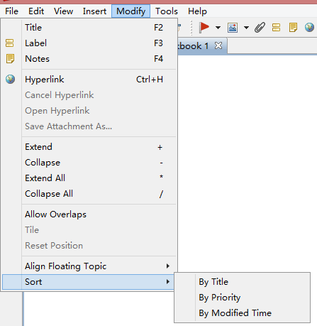

XMind
Collaborative Minds
トピック並び替え
トピック並べ替えは、特に大きなマインドマップで、情報の検索や検査に役立ちます。
トピックを選択します。現在の優先度順、タイトル順、変更時間順でサブトピックを並べ替えることができます。
メニューの[変更]→[トピック並び替え]→[タイトル順/優先度順/変更時間順]を選択します。
注:
XMind は選択したのトピックのサブトピックを並べ替えます。
[タイトル順]を選択すると、トピックがアルファベット順に並べ替えられます。

こちらもご覧ください...
トピック
整列
ヘルプ センター